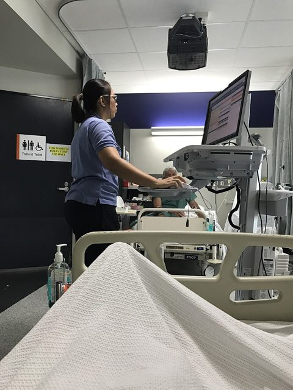

Herramientas Informáticas · Clase 4
Aplicaciones:
siempre hay
otra opción
Para cada tarea existe una aplicación gratis y legal. Y muchas ya las tienes: empiezan en tu navegador.
Ing. Fernando F. Huamani Felles

Para empezar · respondan con la letra en el chat
Mañana debes entregar un informe de práctica… y tu laptop no tiene Word 😰
¿Qué haces? Sean sinceros: nadie va a juzgar.
No. Para casi todo lo que hace un programa de pago existe una opción gratis y legal. Hoy aprendemos a encontrarla.
01
Primera parte
¿Qué es una aplicación?
Y por qué casi nunca hay una sola.
Definición
La aplicación (app)
Es un programa que usamos para hacer una tarea concreta: escribir, calcular, ver un PDF, editar una foto, chatear… Funciona encima del sistema operativo.
💻 De escritorio
Se instala en la computadora.
📱 Móvil
Se baja de la tienda del celular.
🌐 Web
Se usa desde el navegador. No se instala.
En el hospital también se trabaja con aplicaciones: la historia clínica electrónica, el kardex, el sistema de farmacia, las citas…
Explorador · elige una tarea
Una tarea, muchas aplicaciones
¿Gratis o de pago? · toquen cada tarjeta
Las «reglas de uso» de cada aplicación (licencias)
Cada programa trae una licencia: un contrato que dice si puedes usarlo, gratis o pagando, y cómo.
Pagar no es el único camino legal… pero piratear nunca lo es.
02
Segunda parte
El navegador: mucho más que páginas web
La aplicación más poderosa que tienes… y ya viene instalada.
Los navegadores · toca cada uno
¿Cuál usas tú? Todos son gratis
Sobre todo la publicidad y los buscadores (que pagan por aparecer como buscador principal). Por eso conviene revisar su configuración de privacidad.
Experimento · ábrelo con el navegador, sin instalar nada
📁 Descargas
👈 Toca un archivo. El navegador lo abrirá por sí solo, sin instalar ningún programa.
Superpoderes del navegador · toquen cada tarjeta
Lo que tu navegador ya sabe hacer
Truco · Ctrl + P
«Imprime» sin impresora: guárdalo como PDF
Abriste tus resultados de laboratorio en una página web y quieres enviarlos al docente. Presiona Ctrl+P…
Funciona con cualquier página, correo o documento abierto en el navegador. El PDF se ve igual en cualquier computadora o celular.
También: en Chrome toca ⋮ → Compartir → Imprimir → «Guardar como PDF».
| Prueba | Resultado | Referencia |
|---|---|---|
| Hemoglobina | 13,2 g/dL | 12–16 |
| Leucocitos | 7 800 /mm³ | 4 500–11 000 |
| Plaquetas | 250 000 | 150 000–450 000 |
| Glucosa | 92 mg/dL | 70–100 |
Imprimir
1 hoja de papel
Cuidado con los datos de tus pacientes · ¿seguro o riesgoso?
No todo lo que es gratis en internet es buena idea
Para saber más
En el Perú, la Ley N.° 29733 de Protección de Datos Personales considera los datos de salud como datos sensibles. Además, el personal de salud está obligado a guardar el secreto profesional.
03
Tercera parte
¿Y si lo pirateo?
Lo «gratis» que termina saliendo caro.
Piénsalo como enfermera o enfermero
¿Cuál de los dos frascos es falsificado?
Toquen el frasco que creen que es el falso.
| 💊 Medicamento «bamba» | 💿 Programa crackeado |
|---|---|
| Por fuera se ve igual al original | Se ve y funciona igual que el original |
| No tiene registro sanitario | No tiene la firma digital del fabricante |
| Nadie sabe qué tiene dentro | Puede traer virus escondidos |
| Si te hace daño, no hay a quién reclamar | Sin soporte ni actualizaciones de seguridad |
| Venderlo es un delito | Copiarlo y distribuirlo también |
Nunca. Con los programas es igual: si no sabes de dónde viene, no lo instales.
Reto · encuentren las 7 señales de peligro (toquen la página)
Descarga Office completo gratis, sin pagar nunca. Funciona en Windows 10 y 11.
0 / 7 señales encontradas
Simulación · ¿qué hace un crack mientras «instala»?
Por delante te activa Office… por detrás te roba
Microsoft Office 2025 Pro Plus
Versión «full» · Activación permanenteLo que no se ve
🙈 Esto es lo que el usuario nunca ve. Toquen «Ver lo que pasa por detrás».
¿Es delito? Para saber más
Sí. En el Perú los programas están protegidos por la Ley sobre el Derecho de Autor (Decreto Legislativo N.° 822), y el Código Penal sanciona su copia y venta sin autorización. INDECOPI supervisa y multa a empresas e instituciones que usan software ilegal.
Los programas que roban datos (en inglés, infostealers) se esconden muy seguido en cracks y «activadores». Copian las contraseñas guardadas en el navegador y las sesiones abiertas de correo, redes y banca.
¿Qué harías tú? · voten en el chat y luego elijan
Reto final · respondan con la letra en el chat
Para recordar
Lo más importante de hoy
- Una aplicación es un programa para una tarea concreta. Puede ser de escritorio, móvil o web.
- Para cada tarea hay varias aplicaciones: si la famosa es de pago, busca una alternativa gratis, libre o incluida.
- El navegador abre PDF, fotos, audio, video y texto, y con Drive u OneDrive también Word, Excel y PowerPoint.
- Con Ctrl+P → Guardar como PDF conviertes cualquier página en un PDF.
- Los datos de tus pacientes son confidenciales: no los subas a páginas desconocidas.
- Un crack es como un medicamento falsificado: ilegal, sin garantía y con «sorpresas» dentro. Siempre hay otra opción.
Tarea ✍️
Mi botiquín de aplicaciones legales
Completa una tabla con 5 tareas que haces en la computadora o el celular (escribir, ver PDF, editar fotos, hacer exposiciones, comprimir archivos…). Para cada una escribe:
- 🧰 La tarea.
- 💳 La aplicación famosa (o la que usabas).
- ✅ Una alternativa gratis y legal y su licencia (gratuita, libre, incluida…).
- 📍 Dónde funciona: 💻 se instala, 🌐 en el navegador o 📱 celular.
Extra: abre un PDF con tu navegador y prueba escribir o resaltar algo encima (en Edge o Firefox). Escribe en una línea qué pudiste hacer.
| Tarea | Famosa | Alternativa legal | 📍 |
|---|---|---|---|
| Escribir | Word | … | 🌐 |
Herramientas Informáticas
¡Gracias!
Recuerda: antes de buscar un crack, busca una alternativa. Siempre hay otra opción.
Créditos de las imágenes
Fotografías de Wikimedia Commons, usadas según sus licencias. Logotipos de Simple Icons (CC0); las marcas pertenecen a sus dueños. Los mosaicos de Word, Excel, PowerPoint y Edge son recreaciones sencillas. La hoja de signos vitales y los resultados de laboratorio son ficticios.